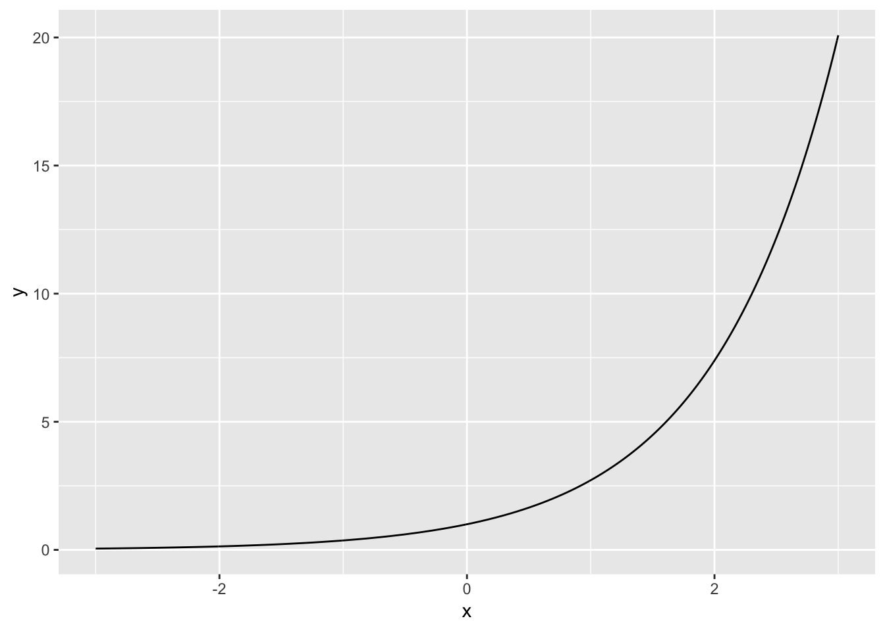
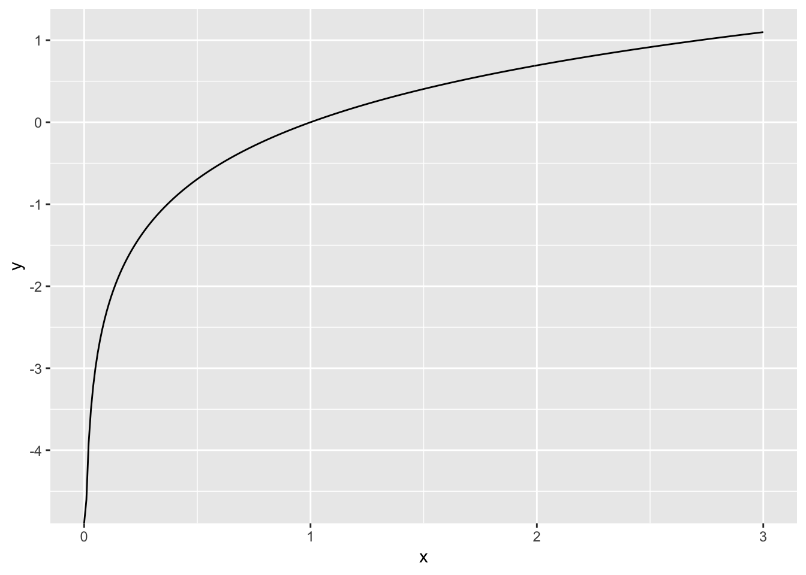

C 第10章「一般化線形モデル」の付録
以下の説明は，高校数学の知識があればわかる内容となっている（はず）。この付録を読まなくても，ロジスティック回帰の理解に差し障りはない（はず）。
C.1 １．指数と対数
指数と対数は，以下の関係にある。
\[ y = e^x \\ \log_{e}y = x \\ \]
\(e\)とはネイピア数と呼ばれるもので（自然対数の底とも呼ばれる），\(e=\) 2.7182818の一定の値を取る（円周率\(\pi\)と同様に，数学において扱われる重要な定数である）。
一般的に，ネイピア数は指数関数の底（\(f(x)=a^x\)の\(a\)に当たる部分）の底としてよく用いられる。
なお，\(e^x\)は，\(\exp(x)\)とも表記する。以降の記述でも，\(\exp(x)\)の方を使う。
また，\(e\)を底とする対数（自然対数）は，\(\log_{e}y\)は単に\(\log y\)と底を省略して表記される。
すなわち，まとめるとネイピア数を底とする指数及び対数の関係は以下のようになる。
\[ y = \exp(x) \\ \log y = x \\ \]
Rでは\(\exp(x)\)の値を求める関数exp()が用意されている。また，\(\log x\)もlog()関数で求めることができる。
exp(1) #x=1のとき，つまりネイピア数eが出力される## [1] 2.718282exp(-1) #xが負の値のとき## [1] 0.3678794exp(-1000) #xが負の値のとき## [1] 0対数と指数は逆関数の関係にある。
log(exp(100))## [1] 100exp(log(100))## [1] 100C.1.1 指数関数
以下が，\(y=e^x\)のグラフである。
x = seq(-3, 3, 0.01)
y = exp(x)
exp_graph = data.frame(y=y, x=x)
ggplot(data = exp_graph, aes(x=x, y=y)) + geom_line()
このように，指数関数は，xが負の値をとってもyは0に漸近するが0にはならないという性質がある。
C.1.2 対数関数
以下が，\(y=\log x\)のグラフである。
x = seq(0, 3, 0.01)
y = log(x)
log_graph = data.frame(y=y, x=x)
ggplot(data = log_graph, aes(x=x, y=y)) + geom_line()
C.2 ２．ロジスティック関数とロジット関数の関係
以下のロジスティック関数（式(3)）は，
\[ q_{i} = \frac{1}{1+\exp[-(\beta_{0} + \beta_{1}x_{i})]} \tag{3} \]
ロジット関数（式(4)）にも変形できる。
\[ \log\frac{q_{i}}{1-q_{i}} = \beta_{0} + \beta_{1} x_{i} \tag{4}\\ \]
なぜか。式(3)から式(4)へ整理してみる（\(y_{i} = \beta_{0} + \beta_{1} x_{i}\)とする）。
\[ q_{i} = \frac{1}{1+\exp(-y_{i})} \\ q_{i}(1+\exp(-y_{i})) =1 \\ q_{i} \biggl\{ 1+\frac{1}{\exp(y_{i})} \biggl\} = 1 \\ q_{i}+\frac{1}{\exp(y_{i})}q_{i} = 1 \\ q_{i}\exp(y_{i})+q_{i} = \exp(y_{i}) \\ q_{i} = \exp(y_{i}) - q_{i}\exp(y_{i}) \\ q_{i} = \exp(y_{i})(1 - q_{i}) \\ \frac{q_{i}}{1-q_{i}} = \exp(y_{i})\\ \log \frac{q_{i}}{1-q_{i}} = y_{i}\\ \]
このように，ロジット関数はロジスティック関数へ変形することが可能。逆に，ロジスティック関数からロジット関数へ変形することも可能。ロジット関数はロジスティック関数の逆関数であり，ロジスティック関数はロジット関数の逆関数である。
C.3 ３．ロジスティック回帰の係数の意味
ロジスティック回帰で推定した回帰式で求める予測値yそのものは，確率を意味しない。 例えば，本文の例題で求めた係数をもとに，独立変数V1=1を代入してみると，
y = -5.16017 + 0.93546 * 1
y## [1] -4.22471マイナスの値である。推定したいのは確率なのに，0から1の範囲に収まらない。
なぜならば，線形予測子から推定されるのは本文の式(4)で示したように，正確には\(\log q_{i}/(1-q_{i})\)だからである。
\[ \log\frac{q_{i}}{1-q_{i}} = \beta_{0} + \beta_{1} x_{i} \tag{4}\\ \]
\(q_{i}/(1-q_{i})\)はオッズ(odds)と呼ばれるもので，ある事象が生じる確率と生じない確率の比を意味する（\(q_{i} = 0.5\)ならばオッズは1，\(q_{i} = 0.9\)ならばオッズは9になる）。
線形予測子から推定されるのは，オッズの対数である（対数オッズ）。
また，式(4)は，以下の式(4’)に変形できる。
\[ \frac{q_{i}}{1-q_{i}} = \exp(\beta_{0} + \beta_{1} x_{i}) \tag{4'}\\ \] \[ \frac{q_{i}}{1-q_{i}} = \exp(\beta_{0}) \exp(\beta_{1} x_{i}) \\ \]
例題で推定された切片及び傾きのパラメータを入れると，
\[ \frac{q_{i}}{1-q_{i}} = \exp(-5.16) \exp(0.94 x_{i}) \\ \] 独立変数\(x_{i}\)が一単位増えた場合，
\[ \frac{q_{i}}{1-q_{i}} = \exp(-5.16) \exp(0.94 (x_{i}+1)) \\ \frac{q_{i}}{1-q_{i}} = \exp(-5.16) \exp(0.94x_{i})\exp(0.94) \\ \]
つまり，オッズ\(q_{i}/(1-q_{i})\)は，\(\exp(0.94)\)倍になる。\(\exp(0.94)\)は2.56であるので，2.56倍である。
exp(0.94)## [1] 2.559981すなわち，ロジスティック回帰の係数（の指数）が意味することは，1単位増えたときにオッズが何倍になるかである（オッズ比という。「XXXをすると，病気のリスクがしないときよりもX倍になる」というイメージ）。
係数が正だとオッズ比は1を超える値を取り，負だと0以上1未満の値を取る。
exp(1)## [1] 2.718282exp(-1)## [1] 0.3678794線形予測子から，確率\(q_{i}\)を直接求めるならば，式(3)を使えば良い。
1/(1+exp(-1*y))## [1] 0.01441864C.4 ４．ポアソン回帰で対数をリンク関数とする理由
ポアソン分布を誤差分布とするとき，リンク関数は対数(log)を用いた。
\(\lambda\)はポアソン分布の平均値を意味する。
\[ \log\lambda = \beta_{0} + \beta_{1} x \\ \] これを変形すると，
\[ \exp(\log \lambda) = \exp(\beta_{0} + \beta_{1} x) \\ \lambda = \exp(\beta_{0} + \beta_{1} x) \\ \]
となる。
線形予測子が負の値であっても，exp(線形予測子)は正の値を取る（指数関数の式を参照）。ポアソン分布のパラメータ\(\lambda\)は\(\lambda>0\)でなければならないが，対数をリンク関数とすることでその前提が満たされる。